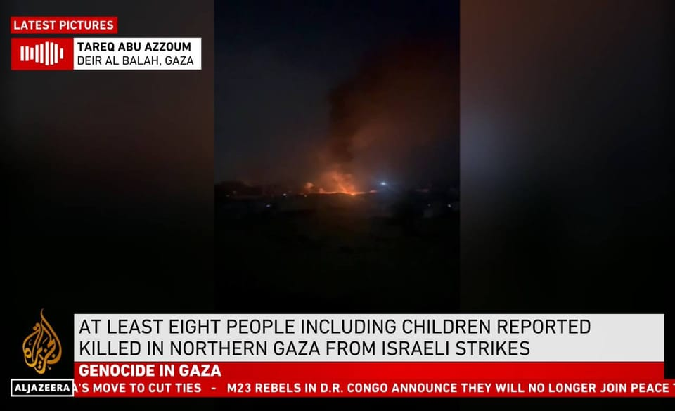

世界苦茶03月18日新闻 | 36条 | 多名外商CEO将于3月24会见习近平

多名外商CEO将于3月24会见习近平 | 以哈停火结束，以色列空袭加沙 | 台湾中国裔出版人被判分裂国家罪 | 习近平指示国家机构调查李嘉诚出售运河资产 | 特朗普普京将今日通话讨论俄乌战争
三个水枪手
苦茶数据
美元兑人民币：7.22（昨日7.23，前日7.23）
美元兑日元：149.63（昨日148.62，前日148.64）
上证指数：3429（昨日3428，前日3419）
标普500指数：6609（昨日5638，前日5521）
比特币：81315（昨日83147，前日84439）
布伦特原油：71.69（昨日71.31，前日70.58）
中国新闻
• 外国CEO将云集北京参加峰会或见习近平： 知情人士透露，数十名外国商界领袖将于本月访问北京参加发展年度会议，其中一些人预计会与国家主席习近平会面。中国发展高层论坛将于三月23日至24日在北京钓鱼台国宾馆举行。议程草案显示，与会者将包括联邦快递、西门子、汽车制造商宝马和梅赛德斯-奔驰、半导体制造商高通、雀巢、阿斯利康、沙特阿美、城堡对冲基金、力拓、德意志银行、麦肯锡、雅诗兰黛、渣打银行和毕马威的首席执行官。几家大型矿业、工程和医疗保健公司的高管也将参加会议。与前几年相比，欧洲首席执行官的比例更高。而习近平可能会在峰会后几天内会见一些商界领袖，其中包括英国和欧洲企业的领导人。
• 中英能源对话，双方愿深化清洁能源合作 ：中国国家能源局局长王宏志在中英能源对话上说，中英能源领域共同利益广泛，愿与英方合作取得更多互利共赢成果。据中国国家能源局官方微信公众号消息，中国国家能源局局长王宏志与英国能源安全与净零内阁大臣米利班德星期一在北京共同主持召开第八次中英能源对话。双方围绕清洁能源技术、能源转型路径、能源安全、国际能源治理等议题深入交换了意见。王宏志表示，中英能源领域共同利益广泛，合作基础良好，中方愿与英方积极落实两国领导人重要共识，推动中英能源合作取得更多互利共赢成果。
• 台湾八旗文化总编辑富察被判煽动分裂国家罪 ：台湾媒体报道，中国大陆国台办证实，上海检察机关指控八旗文化出版社总编辑富察犯下煽动分裂国家罪，法院已在2月一审公开宣判。综合台湾中时新闻网和《联合报》报道，国台办星期一说，上海市人民检察院第一分院指控李延贺犯煽动分裂国家罪一案，上海市第一中级人民法院经依法公开开庭审理，于2月17日一审公开宣判。国台办方面并未提及李延贺的一审公开宣判结果。
• 香港地产大亨李兆基去世，享年97岁 ：有“四叔”之称的香港知名地产富豪、恒基兆业地产公司创办人李兆基，在星期一逝世，享年97岁。恒基星期一在官网发布讣告称，李兆基星期一黄昏在家人陪伴下逝世。恒基在讣告中说，李兆基是杰出的商界领袖，德望昭著，长袖善舞，曾任恒基兆业地产有限公司，香港中华煤气有限公司及美丽华酒店企业有限公司主席，新鸿基地产有限公司副主席、东亚银行、香港小轮集团有限公司及仁安医院董事、特区首届筹委会暨推选委员会委员及顺德联谊总会首席荣誉会长等。
• 解放军台海军演回应美方涉台错误言论 ：中国大陆通过外交部例行记者会媒体提问的方式，间接证实解放军星期一在台海附近展开军演，并指美国近期在涉台问题上立场严重倒退，有关军事行动是对外部势力纵容支持“台独”行径的回应，也是对“台独”分裂势力倒行逆施的严正警告。中国外交部发言人毛宁星期一主持例行记者会。有记者提问，据了解，中国军队当天在台海附近开展军事演习，外界认为，这同近期美国国务院网站修改对台政策表述和“台独”势力倒行逆施有关，中方对此有何评论？毛宁回应说，美方近期在台湾问题上采取了一系列错误行径，特别是修改美国务院网站有关美台关系页面和事实清单内容，删除体现一个中国、不支持“台独”等重要表述，在涉台问题上立场严重倒退，“这是美方蓄意推行‘以台制华’、纵容支持‘台独’的又一恶劣例证，向‘台独’分裂势力发出严重错误信号”。
• 大陆国安部公布台湾四名网络战人员身份 ：中国大陆国家安全部公布台湾资通电军四人身份信息，并警告“倚网谋独”终将是死路一条。大陆国安部星期一在官方微信公众号上通报，台湾资通电军自2017年6月成立以来，便充当“台独”分裂势力的爪牙，无所不用其极地对大陆开展网络攻击渗透活动。大陆国安机关坚定捍卫国家安全，坚决打击台湾资通电军网络谋“独”、网络间谍活动，彻查幕后黑手，肃清危害隐患。大陆国安部透露在深入调查后锁定的四名参与策划、指挥及实施人员的身份信息。这四名男子年龄介于32岁至46岁，任职于台湾资通电军网络战联队网络环境研析中心。46岁的林钰书是中心负责人，32岁的蔡杰宏是中心战队队长。43岁的粘孝帆和35岁的王浩铭是中心现役人员。
• 胡锡进批美国之音影响恶劣 ：中国官媒《环球时报》前总编辑胡锡进在社交平台发文，称隶属美国国际媒体署的美国之音等机构被瘫痪，真是大快人心。胡锡进星期天在个人微博写道，美国之音开办于1942年，是二战的重要宣传工具，鼓舞了前线美军和盟国的斗志。二战之后，它迅速成为美国支持冷战的最重要舆论阵地。到本世纪初，美国之音使用多达53种语言，每周播出数千个节目。在面向中国的广播中，美国之音除了普通话，一度还曾使用闽南方言和粤语。 胡锡进追溯美国之音的影响时称，美国之音对中国的高校学生产生了多么恶劣的影响，误导大家对时局的认知，后来发现美国之音对世界其他地区事务的插手同样活跃，由于不受任何阻拦，影响甚至更大。美国之音就是华盛顿推行霸权主义的舆论先锋，自由亚洲电台、自由欧洲电台也是同样的角色。
• 知情人士称，中国领导人已指示国家市场监管总局等多部门审查长江和记实业出售巴拿马运河港口、和记港口集团资产的交易是否存在潜在安全漏洞或反垄断违规行为： 但知情人士也说，审查不代表后续可能会采取行动。目前也尚不清楚中国有何手段可以阻止该交易。
亚太印太新闻
• 台湾驳斥大陆对其网络攻击指控 ：台湾官方发文驳斥大陆国安部，指对方截取公开网络图片无端拼凑指控旗下军事机构人员从事网络攻击活动。综合台湾《自由时报》《联合报》报道，台湾资通电军指挥部星期一在新闻稿中称，资通电军网络战联队的核心任务是为负责维护国防信息，确保网络安全。大陆撷取网络公开图片“指鹿为马”，无端拼凑指控，凸显其意图以恫吓威逼，压迫台湾民众的蛮横心态。资通电军指挥部分析大陆挑衅举动称，大陆近年不断升高在印太乃至全球的军事威胁，以军机舰袭扰台湾与区域各国，并结合网络攻击等灰色地带手段恫吓胁迫，公然挑战国际秩序、破坏区域和平稳定，近来更因而引发多国抗议谴责，已是国际社会公认最大的“麻烦制造者”。
• 韩国在野党要求国际调查尹锡悦戒严事件 ：韩国五大在野党宣布，将向各国议会联盟申请调查韩国总统尹锡悦发起的“12·3紧急戒严事件”。据韩联社报道，共同民主党、祖国革新党、进步党、基本收入党和社会民主党星期一在国会举行记者会，发布上述消息。民主党议员李在汀在记者会上说，期待各国议会联盟能基于国际人权准则，对尹锡悦发起的内乱事件进行调查。尹锡悦指挥戒严军和警察闯入国会的行为，也将接受国际社会的审判。
• 台湾民调显示，57.9%受访者不赞成大罢免 ：政治立场亲绿的台湾民调显示，不赞成大罢免的民众达57.9%，比赞同的民众高出25.3个百分点。综合ETtoday新闻云、《上报》、《联合报》等报道，台湾民意基金会星期一公布最新民调。结果显示，对于大罢免，赞同者为32.6%，不赞成者57.9%，不赞成的人比赞成的人多25.3个百分点，且全体受访者中，19.6%强烈赞成，34.6%一点也不赞成。台湾民意基金会董事长游盈隆分析，虽然台湾主流民意不赞成大罢免，但赞成大罢免的人数不算少，这大大提高二阶罢免成案的可能性。
• 日外交部要求台湾以民间企业身份参加世博会 ：日本媒体报道，日本外交部要求台湾明确以民间企业身份参展下月揭幕的大阪世界博览会。日本共同社星期一引述台日相关人士称，日方认为台湾经济部早前发出的参展文告，让外界以为台湾是以政府名义与会，因此日本外交部要求台湾明确是以民间企业身份参展。台湾经济部3月6日在官网发布文告，台湾将以TECH WORLD馆名义参加今年4月13日在大阪登场的世界博览会。台湾将透过智慧科技和数位应用，展现多元包容的价值，向世界发出共好的邀请，共同开创美好的未来生活。
• 亚利桑那州州长访台，将与赖清德及台积电高层会面 ：台湾外交部称，美国亚利桑那州州长郝恺悌星期天率团访台，期间将与总统赖清德会面，也将和晶片代工巨头台积电高层及其他企业代表会晤。台湾外交部星期天在官网发布的新闻稿称，郝恺悌3月16日至19日率团访台，此行是郝恺悌上任以来第二次访问台湾。访团在台期间将与赖清德会面，接受外交部长林佳龙款宴，同时拜会经济部以及台积电等重要企业，并与台湾产业代表交流拓展双边商机。
• 台湾军方展开“小汉光”战备演习 ：台湾军方从星期一起展开为期五天、昵称“小汉光”的立即备战操演。各军部队将实兵实施关键基础设施防护等操演科目。据台湾《联合报》报道，台湾三军首度展开的立即战备操演，被基层官兵昵称为“小汉光”。一艘陆军两栖营海龙艇星期天被目击在台中港区巡逻，被认为可能与操演有关。消息人士称，立即战备操演科目概分反制灰色地带袭扰、网络攻击、中国大陆军方集结、备战模拟训练、关键基础设施防护、重要目标防护等等。
科技新闻
• 英特尔新任CEO计划全面改革制造和AI业务，股价跳涨逾7% ：两位熟悉陈立武想法的人士对路透表示，这位即将上任的英特尔首席执行官在周二重返公司之前，已经考虑对其芯片制造方法和人工智能战略进行重大调整，以重振这家陷入困境的科技巨头。新的路径包括重组公司的人工智能方法和裁员，以解决陈立武认为行动迟缓且臃肿的中层管理层问题。路透报导发出后，英特尔股价在纳斯达克交易所开盘时急升逾7%，最终收高6.8%。
• 朝鲜的比特币持有量上升至全球第三： 具有朝鲜政府背景的黑客组织Lazarus Group持有的比特币数量已达到13,518 BTC，现价值 11.3 亿美元。朝鲜的比特币持有量已超过萨尔瓦多的 6,117 BTC 和不丹的 10,635 BTC，使其成为持有比特币排名世界第三的政府实体，仅次于美国的 198,109 BTC 和英国的 61,245 BTC。2月21日， Lazarus 集团黑入加密资产交易所Bybit，从该交易所管理的冷钱包中非法转移了以太坊等加密资产，并通过洗钱将其兑换为BTC。
财经新闻
• 李嘉诚旗下长和取消财报会议，或受港口交易影响 ：路透社引述两名知情人士称，香港首富李嘉诚旗下的长江和记，本周将不会举行财报会议。该集团此前因与贝莱德牵头的财团达成港口交易，而面临北京的压力。长江实业也在星期一向路透社说，该公司将不会举行分析师和媒体会议。路透社引述一名了解情况的不具名分析师说：“一家蓝筹公司不召开财报会议的情况非常罕见……自港口交易以来，该公司没有发布任何声明。股市可能会对此持负面看法。”
• 柬埔寨去年未获中国新贷款，或影响基建项目 ：根据柬埔寨财政部的最新数据，中国在去年未向柬埔寨提供任何新贷款，这标志着最大债权人的角色发生了变化。如果这个趋势持续下去，可能会对柬埔寨的基础设施项目产生影响。据路透社报道，柬埔寨政府数据显示， 未偿还中国的贷款约40亿美元，占该国债务的三分之一以上。这使中国成为柬埔寨最大的债权国，债务总额约占柬埔寨国内生产总值的十分之一。官方数据显示，与2023年3亿零200万美元，以及2022年5亿6700万美元的新贷款协议相比，两国去年签署的贷款协议几乎为零。
• 中国工业电力生产下降，或影响煤炭价格 ：官方数据显示，中国冬季的规上工业电力生产罕见下滑，这将加大对煤炭和天然气等发电厂燃料价格的压力。中国国家统计局星期一在官网发布的数据显示，今年前两个月，规上工业发电量14921亿千瓦时，同比下降1.3%。彭博社报道称，这是自1990年以来第三次出现这一现象，此前的电力产量下滑分别出现在2009年金融危机后和2020年冠病疫情初期。根据彭博社汇编的气象数据，今年前两个月，有39天的气温高于过去30年的平均水平，而2024年仅有33天，并称更温暖的冬季减少了取暖需求。
• 美欧贸易关系因关税问题面临风险 ：美国欧盟商会警告称，美欧贸易关系受到关税冲击，危及每年价值超过9万亿美元的跨大西洋贸易。路透社报道，欧盟美国商会星期一在年度《跨大西洋经济》报告中指出，美欧贸易关系日益加深，到2024年将达到创纪录的水平，商品和服务贸易额预计达到2万亿美元。2025年对美欧贸易关系来说，既充满希望，也有许多风险。美国总统特朗普祭出多项关税政策，包括对进口钢铝产品征收关税。欧盟为此制定报复计划，特朗普则恫言对欧盟葡萄酒和烈酒征收200%关税。
• 中国新房价格环比下降，房地产市场仍承压 ：中国国家统计局发言人称，2月新房价格环比持续上涨，但中国房地产市场回稳压力仍在。据中国网报道，中国国家统计局新闻发言人、国民经济综合统计司司长付凌晖星期一在记者会上，对于如何看待中国1月至2月房地产市场运行状况时说，在促进房地产市场止跌回稳政策作用下，中国70个大中城市中，2月一线城市新建商品住宅销售价格环比继续上涨，一二三线城市新建商品住宅和二手住宅销售价格同比降幅继续收窄。他介绍，从新建商品住宅销售价格来看，一线城市同比降幅比上月收窄了0.4个百分点。二线和三线城市同比降幅分别比上月收窄了0.3和0.1个百分点。从二手住宅销售价格来看，一线城市同比降幅比上月收窄了0.7个百分点，二、三线城市同比降幅均收窄了0.2个百分点。
• 美国2月零售销售小幅反弹，围绕关税和联邦政府裁员的不确定性加剧 ：美国2月零售销售小幅反弹，消费者缩减非必需支出，在关税和联邦政府大规模裁员的背景下，经济的不确定性加剧。尽管如此，美国商务部的报告暗示，美国经济在第一季度继续增长，但步伐温和。美国商务部统计局表示，2月零售增长0.2%，1月零售销售下修为下降1.2%。餐馆和酒吧销售急剧下降1.5%，为2024年1月以来的最大降幅，暗示非必需支出趋软。
• 美国公司为规避关税转向购买中国力勤资源在印尼生产的钴 ：三位知情人士称，美国公司正在购买中国力勤资源在印尼生产的钴金属，这些钴金属不受特朗普政府对直接从中国进口的产品征收的关税影响。业内消息人士称，力勤资源在最新对华关税实施前就开始在印尼生产钴金属，去年该公司在印尼生产的钴首次通过贸易商出口到美国。
俄乌战争
• 乌克兰总统更换武装部队总参谋长 ：乌克兰总统泽连斯基3月16日任命安德里·格纳托夫为武装部队总参谋长，免去阿纳托利·巴尔吉列维奇总参谋长职务。格纳托夫有超过27年的军事经验，曾担任乌海军陆战旅指挥官、乌陆军东部作战司令部司令等。国防部长乌梅罗夫说，正在系统地改造武装部队以提升战斗力。巴尔吉列维奇将被任命为乌国防部监察长，负责整饬军规军纪。美国总统特朗普表示，他将于18日与俄罗斯总统普京通话，讨论如何结束战争。特朗普说，土地和发电厂是此次对话的一部分，并将其描述为“分割某些资产”。
• 英首相称多国愿派维和部队赴乌克兰 ：英国首相斯塔默发言人说，如果与俄罗斯达成和平协议，“相当多”国家愿意向乌克兰派遣维和部队。路透社报道，斯塔默的发言人星期一告诉记者，预计将有30多个国家加入所谓的“自愿联盟”，以支持乌克兰。“贡献能力各不相同，但这将是一支重要的力量，有相当多的国家提供部队。”当被问及维和部队会否被允许在遭到攻击时进行反击，发言人回应称，正在举行军事规划会议讨论细节。
• 俄朝高层会晤讨论“最高级别接触”日程 ：俄罗斯外交部发表声明称，俄副外长鲁登科在朝鲜会见朝鲜外交部官员，并与朝方就两国“最高级别接触”日程进行讨论。韩联社报道，俄罗斯外交部星期一透露，鲁登科在上星期六与朝鲜外长崔善姬和副外长金正奎会面。外交部说，俄朝就双边关系发展和高层会晤安排进行深入讨论，重点落实俄罗斯总统普京去年6月访朝时达成的协议。
• 特朗普计划18日与普京通话讨论乌克兰战争 ：美国总统特朗普计划在星期二与俄罗斯总统普京通话，讨论如何结束俄乌战争。据路透社报道，特朗普星期一在总统专机上告诉记者，他会在星期二与普京通电话，双方已在周末做了很多工作。“我们想看看能否结束这场战争。也许可以，也许不能，但我认为很有希望。”美国早前提出一份30天临时停火方案，基辅表示原则上接受这份方案，特朗普正在争取普京的支持。
• 特朗普和普京将就结束战争举行通话，发电厂和乌克兰领土割让是重点 ：美国总统特朗普表示，他将于周二与俄罗斯总统普京就结束乌克兰战争一事举行通话，乌克兰的领土割让和对扎波罗热核电站的控制权可能是会谈的重点。白宫发言人莱维特在周一的例行发布会上说，特朗普和普京将讨论俄罗斯和乌克兰“边境”上的一座核电站。克里姆林宫发言人佩斯科夫拒绝就特朗普有关土地和发电厂的言论发表评论。特朗普表示，在周二与俄罗斯总统普京通话之前，已经就乌克兰问题最终协议的许多内容达成一致，但仍有很多内容有分歧。
其他新闻
• 以色列3月18日对加沙发动大规模空袭，已有多人死伤。以军称，袭击针对哈马斯目标： 以色列总理办公室表示，在哈马斯拒绝美国延长第一阶段停火的提议后，以色列已恢复在加沙的军事行动。
• 美军对也门胡塞武装展开新一轮空袭 ：也门胡塞武装称，美国对也门展开新一轮空袭；美国国家情报总监加巴德则称，美国希望其他国家也采取行动打击胡塞武装。据当地马西拉电视台报道，美军星期一袭击红海港口城市荷台达和首都萨那北部的焦夫省。胡塞武装也称，作为回击，该组织已在红海对美国航空母舰发动两次袭击，但没有提供证据。
• 伊朗副外长将会见国际原子能机构总干事 ：伊朗外交部称，伊朗副外长加里巴巴迪将到维也纳，会见国际原子能机构总干事格罗西。据法新社报道，伊朗外交部星期一说，加里巴巴迪将在星期一访问联合国核监督机构总部，与格罗西会谈，并指这次会面是他们“与该机构持续合作的一部分”。伊朗外交部也说：“随着对伊朗和平核设施的威胁增加，我们自然会加强与国际原子能机构的磋商。”
• 古巴全国大停电后部分恢复供电 ：古巴国家电网在全国大停电两天后重新连接电力，首都哈瓦那大部分地区恢复电力供应。此前全国约1000万人断电。路透社报道，哈瓦那电力公司当地时间星期天说，哈瓦那市约三分之二的用户已经恢复供电，预计星期一会有更多用户可以正常用电。哈瓦那多个社区在经历两天无电生活后，重新亮起灯光，居民欢呼庆祝。哈瓦那一个变电站的输电线路上个星期五发生短路，引发连锁反应，导致全岛发电系统完全瘫痪，古巴电网随之崩溃。哈瓦那大部分地区自此陷入停电，商业活动停摆，大部分餐馆停业，街道和红绿灯也全部熄灭。
• 特朗普政府无视禁令驱逐移民 ：特朗普政府不顾联邦法官禁令，仍将数百名移民转移到萨尔瓦多。哥伦比亚特区联邦地区法院法官博斯伯格3月15日发布临时禁令，暂停政府的驱逐行为。他还口头命令2架载有移民飞往萨尔瓦多和洪都拉斯的飞机掉头。该命令未包含在书面命令之中。飞机显然没有遵循法官命令掉头。萨尔瓦多总统纳伊布·布克尔发文称：“哎呀…为时已晚。”萨尔瓦多政府16日发布视频显示，戴着手铐脚铐的男子被警察押送前往监狱。在被问及政府是否藐视法院命令时，白宫新闻秘书称，政府并未“拒绝遵守”法院命令。这项“没有合法依据”的命令是在移民被驱逐出美国领土后发布的。正在上诉的司法部表示，若博斯伯格的命令未被推翻，该部门将不会使用特朗普援引的《外敌法案》进一步驱逐其他人。
• 教宗方济各入院后首度露面 ：梵蒂冈3月16日发布教宗方济各在医院参加弥撒活动的照片。这是方济各此次入院以来的首张照片。医生此前表示，方济各的健康状况稳定，但临床情况仍然复杂。
• 加总理卡尼称加拿大寻求加强与欧洲盟友关系 ：加拿大总理卡尼说，加拿大正寻求加强与“可靠”的欧洲盟友关系。法新社报道，卡尼星期一在爱丽舍宫与法国总统马克龙举行的联合记者会上说：“加强与法国等可靠盟友关系，比以往任何时候都更加重要。”这是卡尼上周上任以来的首次出访。他将加拿大描述为“非欧洲国家中最欧洲化的国家”，并称加拿大需要加强与法国等欧洲盟友的关系，同时努力保持与美国的良好关系。
• 刚果民主共和国反政府武装“M23运动”3月17日宣布，将不参加原定于18日在安哥拉首都罗安达举行的与刚果政府的直接和平谈判： “M23运动”说，一些国际组织对“M23运动”成员的制裁破坏了对话进程，会谈“已变得不可行”。同时，刚果军方在冲突地区持续其攻势，“因此，我们的组织无法继续参与这些讨论”。刚果总统府发言人表示，刚果政府仍会派遣代表团前往罗安达。但她并未说明代表团成员组成。